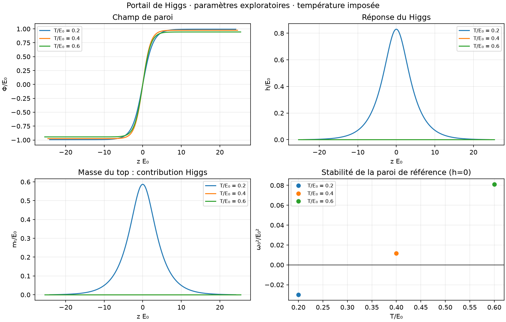

Paroi et Higgs : une première interaction calculée
Vint = κ Φ² H†H / 2 = κ Φ² h² / 4. Les champs sont résolus ensemble à température fixée. E₀ et les paramètres ne sont pas calibrés sur des mesures.
Résultats · Profils et masses · Convergence numérique · Configuration · Contrôles
Réponse locale et stabilité
ω₀² < 0 signale une perturbation du Higgs qui peut croître sur la paroi initiale. Le calcul inclut le coût des gradients. Ce diagnostic ne prouve ni une nucléation, ni la stabilité complète du profil final.

Ce que mesurent les sorties
La relaxation recherche un profil stationnaire plan. Ses itérations sont numériques, sans durée physique. La baisse d’énergie libre n’est pas comptée comme chaleur donnée au plasma. Les profils de masses top/W/Z omettent les effets thermiques sur la propagation. Le coefficient E × Fz = −½ ∂z(m²) prépare le transport semi-classique ; aucune force moyenne ni puissance ne sont encore calculées.
Les valeurs +Φ et −Φ donnent le même couplage loin des deux côtés ; le changement peut être localisé dans la paroi. Une extension au transport demandera les distributions, les collisions et leurs réactions inverses.
Mécanismes restant à calculer
- Origine microscopique du champ collectif et contraintes expérimentales sur ce jeu de paramètres.
- Potentiel thermique complet, corrections de boucles et dépendance de jauge.
- Stabilité complète des profils finaux ; minima multiples non exclus.
- Friction, vitesse physique, chauffage, réactions QCD et populations hors équilibre.
- Taux de nucléation, température de nucléation, bulles 3D et gravitation.